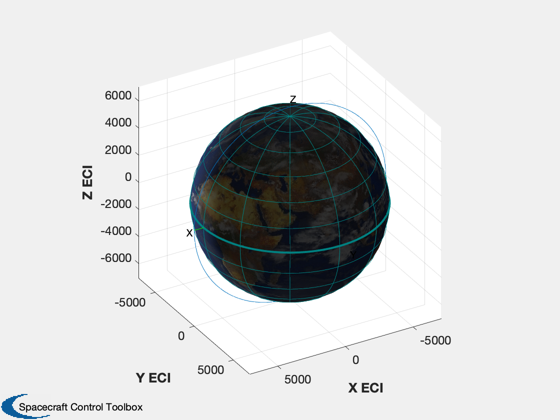
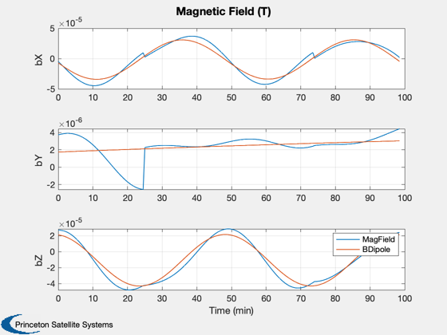
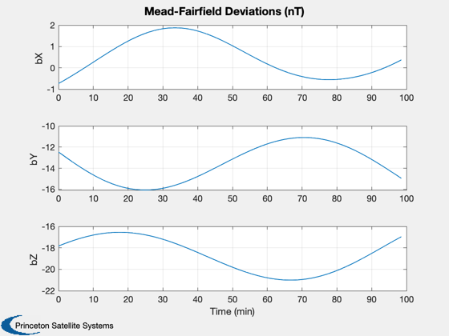

Compare the magnetic field models.
Compares the dipole and IGRF models in a polar orbit. Also computes the variations from the dipole of the Mead-Fairfield model.
Things to try: look at other orbits, such as an equatorial orbit, for comparison. Also try different numbers of coefficients in the IGRF model. ------------------------------------------------------------------------ See also Plot2D, JD2000, PltOrbit, RVFromKepler, BDipole, MagField, BMF ------------------------------------------------------------------------
Contents
%------------------------------------------------------------------------------- % Copyright (c) 1999-2003, 2007, 2016 Princeton Satellite Systems, Inc. % All rights reserved. %------------------------------------------------------------------------------- % 2016.1 Switch to newer IGRF11 model (from 1995 data) for the Earth %--------------------------------------------------------------------------
Generate the orbit
el = [a,i,W,w,e,M]
%--------------------
el = [6718+352 pi/2 0 0 0 0];
p = Period(el(1));
dTSim = 30;
[r, v, t] = RVFromKepler( el, 0:dTSim:p );
jD0 = Date2JD([2015 1 1]);
Magnetic field data
%--------------------- magFieldData = load('IGRF11');
Preallocate the array
%-----------------------
nSim = length(t);
bPlot = zeros(3,nSim);
dPlot = zeros(3,nSim);
fPlot = zeros(3,nSim);
jD = jD0;
Run the simulation.
Use only the first two terms of the IGRF model for the comparison. Pass empty instead of 2 to use all available terms in the model.
%-------------------- kP = 2; % solar activity index for k = 1:nSim bPlot(:,k) = MagField( r(:,k), jD, 4, magFieldData ); dPlot(:,k) = BDipole( r(:,k), jD ); fPlot(:,k) = BMF( r(:,k), jD, kP ); jD = jD0 + t(k)/86400; end
Plotting
%--------- [tPlot,tLbl] = TimeLabl(t); PltOrbit( el, jD0 ) Plot2D( tPlot, [bPlot;dPlot], tLbl,['bX ';'bY ';'bZ '],'Magnetic Field (T)','lin',['[1 4]';'[2 5]';'[3 6]']) legend('MagField','BDipole') Plot2D( tPlot, [fPlot-dPlot]*1e9, tLbl,['bX ';'bY ';'bZ '],'Mead-Fairfield Deviations (nT)' ); %--------------------------------------
ans =
Figure (PlotPSS) with properties:
Number: 2
Name: 'Earth Orbit'
Color: [0.94 0.94 0.94]
Position: [560 528 560 420]
Units: 'pixels'
Use GET to show all properties
  